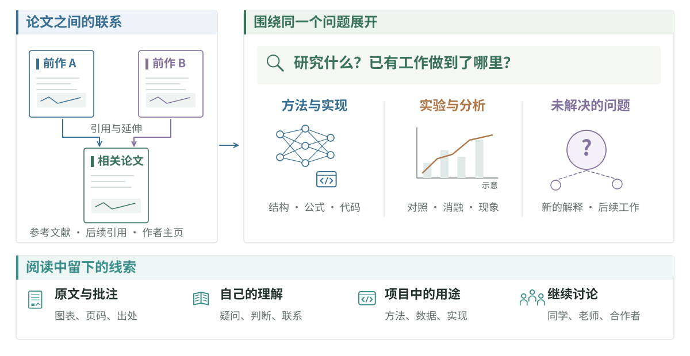

开始做 research，可能没有你想象中那么遥远。很多时候，我们是在读文章、做项目、和别人讨论的过程中，遇到了一个好奇的问题，或者想到了一种可能的改进。顺着这条线去调研、尝试、分析结果，再把发现整理成文章，一项研究就这样逐渐有了形状。

了解一个领域
调研的过程中，你也会逐渐认识整个领域。可以从最吸引你的大方向出发，通过综述、报告和课程建立一个 overview，再读经典论文和研究者的 blog，把领域的发展连起来：每一项工作是在什么背景下提出的，为什么采用这样的做法，解决了什么问题，又让大家对这件事有了什么新的认识？ 沿着这些变化，你会看到不同的研究路线，也会发现一个大领域里还有许多细分方向。
其中有些问题会让你特别好奇，有些工作能为眼下的研究提供方法、数据或新的理解。顺着这些线索继续读、继续尝试，你会逐渐形成自己的判断：什么值得研究，什么还没有讲清楚，下一步可以做什么。所谓 research taste、idea 和对领域的认知，也是在阅读、讨论和实验中慢慢长出来的。
遇到一篇感兴趣的文章，也可以看看作者之前和之后的工作、主页、blog 和报告。沿着同一个问题读下去，有时能看见单篇论文里不容易察觉的思考过程。
查找论文与相关工作
Google Scholar 可以查论文的后续引用与相关工作；论文中的参考文献则能找到它所依赖的前人工作。作者主页、项目页和代码仓库常有报告、演示与后续更新。检索功能见 Scholar 官方说明，AMiner 也提供论文检索与阅读功能。
刚接触一个方向时，可能还不知道用什么词搜索。读过几篇综述和论文后，常见的术语、任务名称和方法就会逐渐熟悉，也更容易找到相关工作。更多方法见定向文献检索。
读到什么程度
阅读深度取决于这次想弄明白什么。 了解一项工作时，先关注问题、主要方法和关键结果；梳理一个方向时，要比较工作之间的联系；准备复现或改进，则需要细看架构、公式、数据和实验设置。
同一篇论文也可以分几次读。第一遍留下的疑问，可能在看过后续工作、代码或实验之后才有答案。Keshav 的 How to Read a Paper 介绍了三遍阅读法；李沐的如何读论文也谈到论文的阅读顺序与深度。
论文里的问题、方法与实验
从摘要、引言、关键图和结论开始，了解做了什么、为什么做、怎么做，再去实验里看结果怎样支持这些判断。方法细节和没弄懂的地方，可以回头再查。
比如作者说一个模块带来了提升，就看看消融是否单独改变了这个模块；说能泛化到新场景，就找测试场景与训练数据的关系。比较几篇工作时，除了方法差别，还要看它们使用的任务、数据和计算资源是否相同。阅读中的疑问也可以拿来讨论，或让 AI 围绕你的理解追问。
复现时要看的细节
准备复现时，数据处理、训练配置和评测方式往往需要结合代码才能看清。有些实现细节没有写进正文，却会影响结果；附录、配置文件和 issue 经常能补上这部分信息。
论文笔记与文献整理
Zotero 可以保存论文信息、PDF 和批注；Obsidian、飞书或 Notion 都可以用来整理自己的理解、疑问和相关材料。除了文章讲了什么，笔记里也值得留下自己当时为什么关注它、哪些地方还没想明白，连同相关图表和原文位置一起保存。Zotero 与 Obsidian 的配置和笔记示例见论文与笔记工作流。
几篇论文讨论同一个问题时，可以把它们放在一起，整理方法之间的联系、各自的实验条件和仍未解决的问题。随着阅读和实验推进，这些联系也会变化。研究问题与相关工作里有一种整理方式。
论文讲解与相关资料
李沐论文精读逐段讲解研究背景、方法与实验，也讨论论文写作。Transformer、ViT、CLIP 等视频见论文选读，更多课程与精读视频见深度学习课程与论文精读。